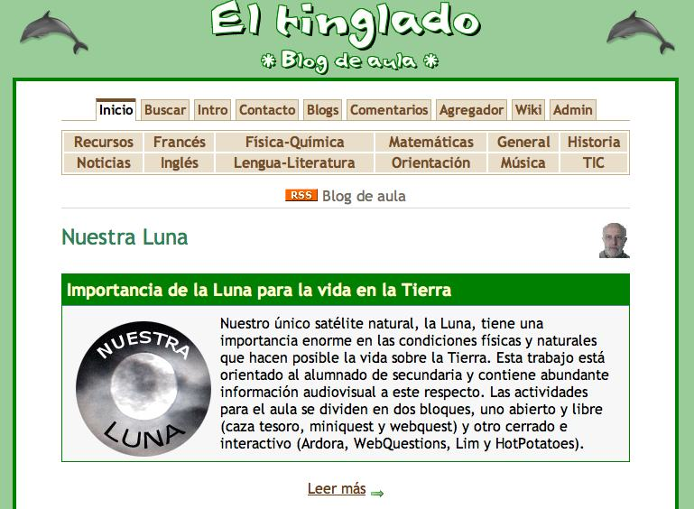
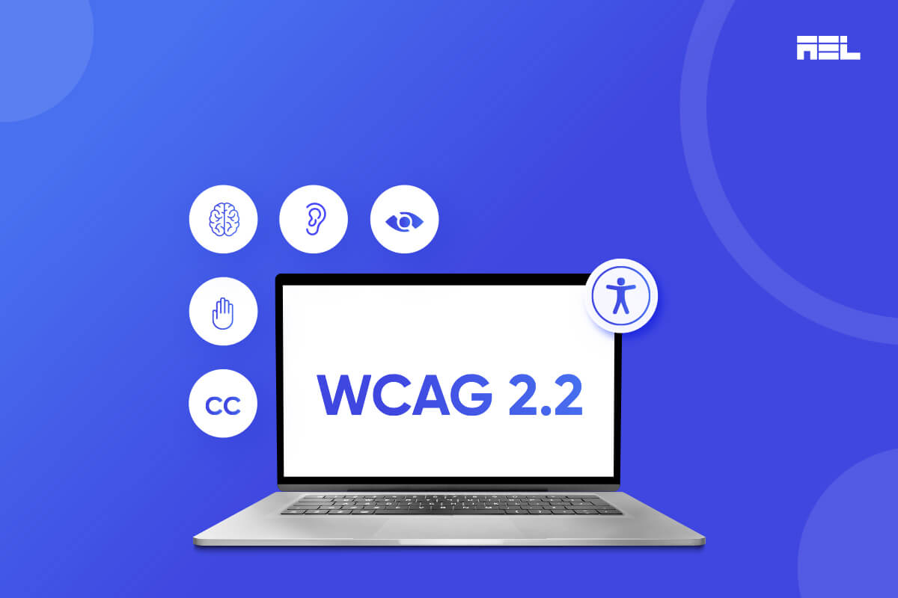
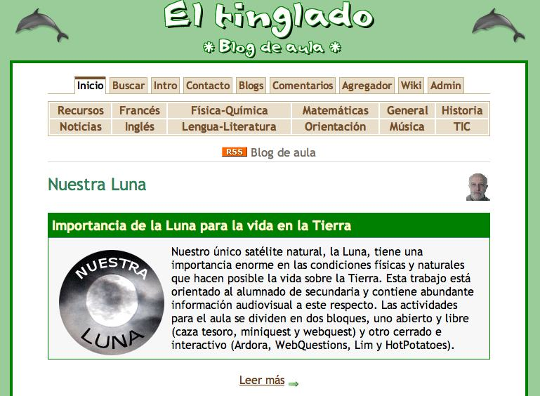
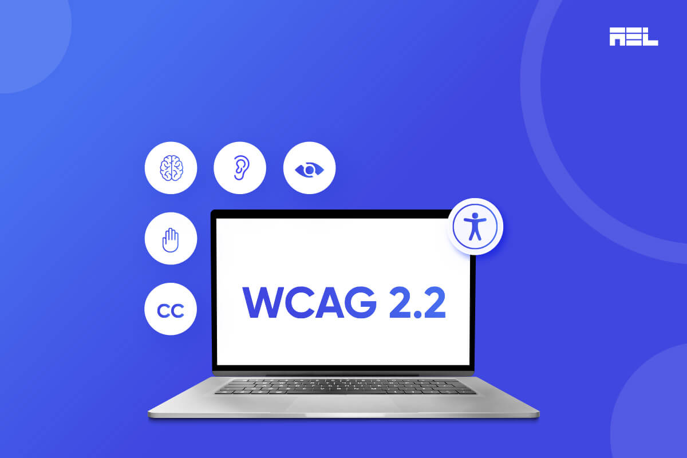

La tecnología al servicio de una educación democrática
El desarrollo de webs educativas es una herramienta clave para democratizar el acceso al conocimiento. En EducaWeb diseñamos plataformas, aulas virtuales, blogs escolares y recursos digitales adaptados a las necesidades reales del alumnado y del profesorado.
Apostamos por tecnologías libres, diseño accesible y contenidos críticos, que no solo transmitan saberes, sino que inviten a pensar, crear y transformar. Nuestras webs no son escaparates, sino espacios vivos de aprendizaje compartido.
 


